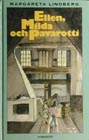
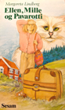
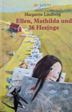
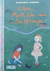
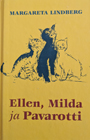

|
Startsidan
Böcker
Dramatik
Kultur-/barnprojekt
Margareta Lindberg Sigfrid |
|

1991 |
Översättningar
|

Danska |

Tyska |

Tyska |

Estniska |
|
"Lindberg är rolig också nu, ja hon är något av en Dario Fo för de yngre. Hennes nya bok är en fars, men som i riktiga farser finns där en allvarlig botten.".... "Det händer mycket, det händer snabbt och det är bara delvis sannolikt, just som i en äkta fars, och det är slagfärdigt, intill stollighet utan att bli påfrestande. Kanske finns det i språket sådant som bara kan avnjutas av vuxna - men än sen? Hela historien är härlig för alla åldrar." Ulla Lundqvist i DN Det sägs att det spökar i Stora smedjan. Blodisande skrik i den bleka roslagsnatten. Det är bra tycker Ellen. Då håller folk sig undan. För längst in i smedjan, bakom den bortersta härden, har Ellen sin hemlighet. Milda får inte veta, och inte Allan myrhataren, och inte Ma-Lo hönsmålerskan, och inte labradoren Caruso. Och absolut inte Sillstryparn.... Det vore det värsta av allt! Det är tur att fröken Stare är så begiven på osvavlade fikon. Annars hade nog inte den här historien fått ett så lyckligt slut. Lämplig högläsning från 7-10 år. Boken finns på bibliotek, men inte längre i bokhandeln. Illustrationer: Åke Eriksson IBSN 91-1-917092-0. Utgiven av Norstedts 1991. |